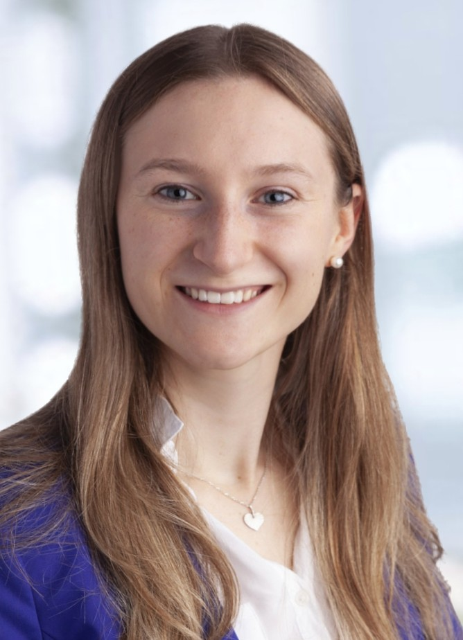

Hi, I’m Melanie 👋
I am an incoming PhD student at the Munich Center for Machine Learning (MCML) and the TUM Chair of Computational Imaging and AI in Medicine (starting August 2026). My research focuses on 3D reconstruction from medical ultrasound imaging data.
Currently, I am a Research Assistant at TUM Klinikum rechts der Isar, where I work on optimized ML and deep learning algorithms for PVC detection in long-term ECG recordings and explore scalable long-sequence Transformer designs.
I hold an M.Sc. in Mathematics in Data Science from the Technical University of Munich (TUM). I’m passionate about bridging the gap between mathematical theory and real-world medical applications.
Outside of academia, I enjoy building hands-on projects like PoseQuest, a computer-vision based coaching tool for equestrian sports.
- Based in: Munich, Germany
- Currently: Research Assistant (ECG / PVC detection) · Incoming PhD (Aug 2026)
- Interests: Medical AI, 3D Reconstruction, Biosignals, Computer Vision